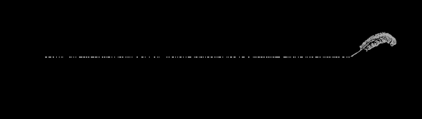
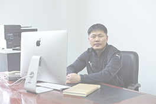
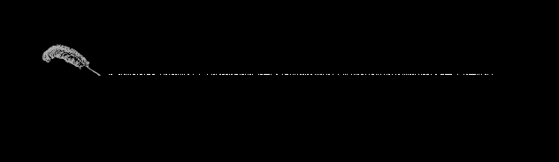
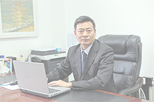

DIGITAL ARTS > INTRODUCE
DIGITAL ARTS > INTRODUCE
DEPARTMENT OF DIRECTOR
Yu qingjun, professor, graduated from Harbin engineering university in July 1997
with a bachelor's degree in industrial automation.
In July 2001 and July 2004,he received a master's degree in
systemengineering from south China university of
science and technology
and a PhD in communication
with a bachelor's degree in industrial automation.
In July 2001 and July 2004,he received a master's degree in
systemengineering from south China university of
science and technology
and a PhD in communication
PARTY BRANCH SECRETARY
Chaired or participated in 3 provincial teaching reform projects
one for teaching achievement prizes at the provincial level (rank 3)
and field teaching achievement first prize (rank 2), 1 item 12 reform
papers; Participate in provincial research project 4, host
or participate in horizontal research project 3 items
teacher in liaoning province
one for teaching achievement prizes at the provincial level (rank 3)
and field teaching achievement first prize (rank 2), 1 item 12 reform
papers; Participate in provincial research project 4, host
or participate in horizontal research project 3 items
teacher in liaoning province